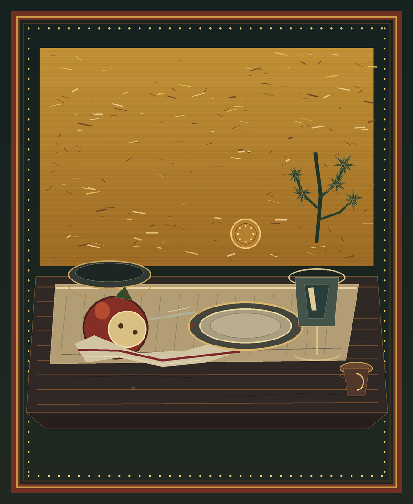
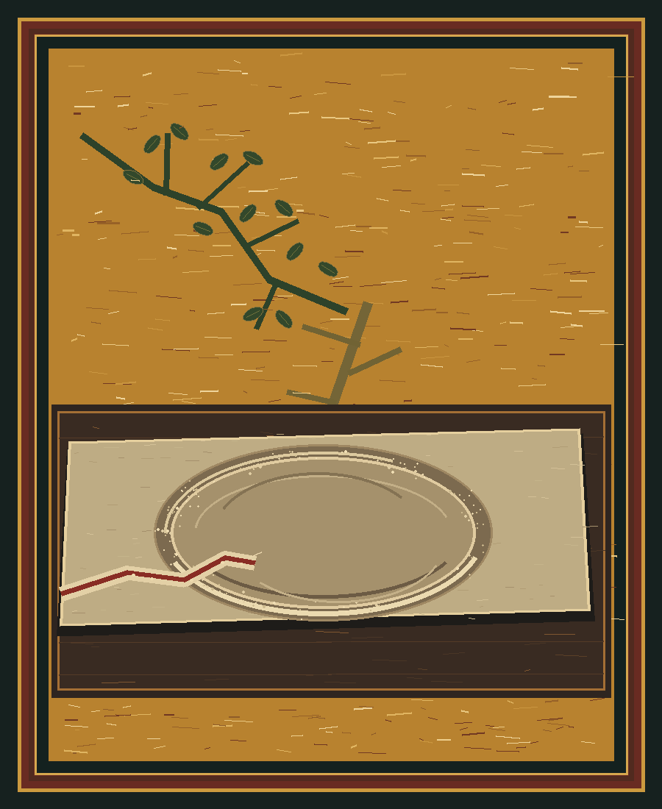

Two tables after a story has happened. Ordinary things keep the traces; a place stays open in each panel, first as a vessel, then as the impression of a weight.

The Place Left Clear. The split apple and red-edged silk carry an echo of The Juniper Tree. The empty plate remains an absence and an invitation at once. Read the companion poem, “The Daughter Carries the Song.”
The Weight Leaves a Place

The stone is gone, but its weight has pressed a hollow into the flour and cloth. The linden remains at the edge; the red selvedge reaches toward the mark and stops. Here the open place is made by pressure rather than set at the table.